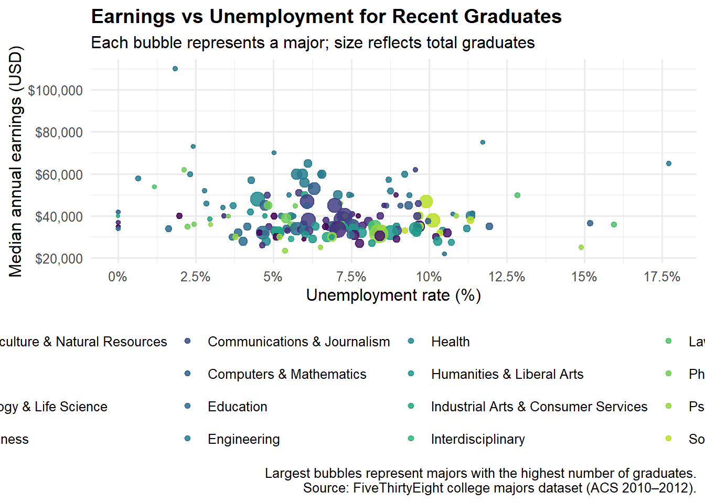
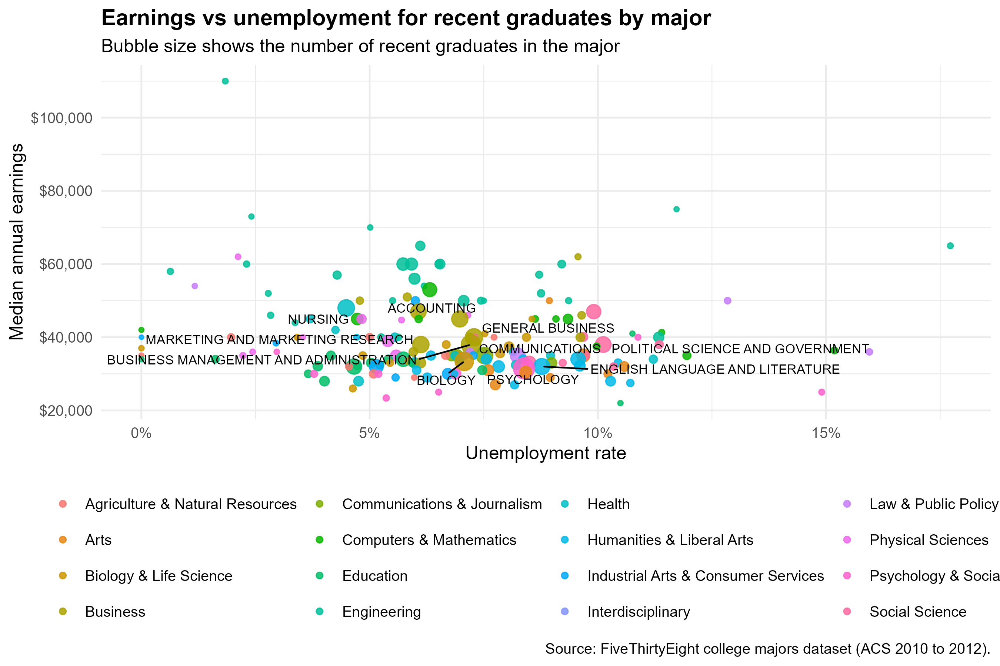

library(tidyverse)
library(scales)
library(ggrepel)
library(gt)
library(gtExtras)
library(viridis)Presentation Exercise
Load local data
df <- readr::read_csv("data/recent-grads.csv")
dplyr::glimpse(df)Rows: 173
Columns: 21
$ Rank <dbl> 1, 2, 3, 4, 5, 6, 7, 8, 9, 10, 11, 12, 13, 14, 15…
$ Major_code <dbl> 2419, 2416, 2415, 2417, 2405, 2418, 6202, 5001, 2…
$ Major <chr> "PETROLEUM ENGINEERING", "MINING AND MINERAL ENGI…
$ Total <dbl> 2339, 756, 856, 1258, 32260, 2573, 3777, 1792, 91…
$ Men <dbl> 2057, 679, 725, 1123, 21239, 2200, 2110, 832, 803…
$ Women <dbl> 282, 77, 131, 135, 11021, 373, 1667, 960, 10907, …
$ Major_category <chr> "Engineering", "Engineering", "Engineering", "Eng…
$ ShareWomen <dbl> 0.1205643, 0.1018519, 0.1530374, 0.1073132, 0.341…
$ Sample_size <dbl> 36, 7, 3, 16, 289, 17, 51, 10, 1029, 631, 399, 14…
$ Employed <dbl> 1976, 640, 648, 758, 25694, 1857, 2912, 1526, 764…
$ Full_time <dbl> 1849, 556, 558, 1069, 23170, 2038, 2924, 1085, 71…
$ Part_time <dbl> 270, 170, 133, 150, 5180, 264, 296, 553, 13101, 1…
$ Full_time_year_round <dbl> 1207, 388, 340, 692, 16697, 1449, 2482, 827, 5463…
$ Unemployed <dbl> 37, 85, 16, 40, 1672, 400, 308, 33, 4650, 3895, 2…
$ Unemployment_rate <dbl> 0.018380527, 0.117241379, 0.024096386, 0.05012531…
$ Median <dbl> 110000, 75000, 73000, 70000, 65000, 65000, 62000,…
$ P25th <dbl> 95000, 55000, 50000, 43000, 50000, 50000, 53000, …
$ P75th <dbl> 125000, 90000, 105000, 80000, 75000, 102000, 7200…
$ College_jobs <dbl> 1534, 350, 456, 529, 18314, 1142, 1768, 972, 5284…
$ Non_college_jobs <dbl> 364, 257, 176, 102, 4440, 657, 314, 500, 16384, 1…
$ Low_wage_jobs <dbl> 193, 50, 0, 0, 972, 244, 259, 220, 3253, 3170, 98…getwd()[1] "C:/Users/alexa/OneDrive/Documents/GitHub/mada-portfolio/presentation-exercise"file.exists("data/recent-grads.csv")[1] TRUElist.files("data")[1] "recent-grads.csv"Prepare data for plot
plot_df <- df |>
dplyr::filter(
!is.na(Median),
!is.na(Unemployment_rate),
!is.na(Total)
) |>
dplyr::mutate(
unemployment_pct = Unemployment_rate * 100,
median_usd = Median
)
label_df <- plot_df |>
dplyr::arrange(dplyr::desc(Total)) |>
dplyr::slice(1:10)Bubble chart
p <- ggplot(plot_df, aes(x = unemployment_pct, y = median_usd)) +
geom_point(aes(size = Total, color = Major_category), alpha = 0.85) +
scale_color_viridis_d(option = "D", end = 0.9) +
scale_y_continuous(labels = scales::dollar) +
scale_x_continuous(
breaks = seq(0, 25, 2.5),
labels = function(x) paste0(x, "%")
) +
guides(size = "none", color = guide_legend(title = NULL)) +
labs(
title = "Earnings vs Unemployment for Recent Graduates",
subtitle = "Each bubble represents a major; size reflects total graduates",
x = "Unemployment rate (%)",
y = "Median annual earnings (USD)",
caption = "Largest bubbles represent majors with the highest number of graduates.\nSource: FiveThirtyEight college majors dataset (ACS 2010–2012)."
) +
theme_minimal(base_size = 12) +
theme(
plot.title = element_text(face = "bold"),
legend.position = "bottom"
)
p
ggsave(
filename = "reproduced-figure.png",
plot = p,
width = 9,
height = 6,
dpi = 300
)Publication-quality table
tbl_df <- df |>
dplyr::transmute(
Major,
Category = Major_category,
Median,
UnemploymentPct = Unemployment_rate * 100,
ShareWomenPct = ShareWomen * 100,
Total
) |>
dplyr::filter(!is.na(Median), !is.na(UnemploymentPct), !is.na(ShareWomenPct)) |>
dplyr::arrange(dplyr::desc(Median)) |>
dplyr::slice(1:15)
gt_tbl <- tbl_df |>
dplyr::select(Major, Category, Median, UnemploymentPct, ShareWomenPct, Total) |>
gt(rowname_col = "Major") |>
tab_header(
title = md("**Table 1.** Top majors by median earnings"),
subtitle = "Summary statistics for recent graduates"
) |>
tab_spanner(
label = "Outcomes",
columns = c(Median, UnemploymentPct, ShareWomenPct)
) |>
fmt_currency(columns = Median, decimals = 0) |>
fmt_number(columns = c(UnemploymentPct, ShareWomenPct), decimals = 1) |>
cols_label(
Category = "Field",
Median = "Median earnings",
UnemploymentPct = "Unemployment (%)",
ShareWomenPct = "Share women (%)",
Total = "Total grads"
) |>
tab_style(
style = cell_text(weight = "bold"),
locations = cells_column_labels(everything())
) |>
data_color(columns = UnemploymentPct, method = "numeric") |>
data_color(columns = ShareWomenPct, method = "numeric") |>
gtExtras::gt_plt_bar(column = Total, scaled = TRUE) |>
tab_footnote(
footnote = "Data: FiveThirtyEight college majors dataset (ACS 2010 to 2012).",
locations = cells_title(groups = "title")
) |>
tab_footnote(
footnote = "Unemployment and share women are shown as percentages.",
locations = cells_column_labels(columns = c(UnemploymentPct, ShareWomenPct))
)
gt_tbl| Table 1. Top majors by median earnings1 | |||||
| Summary statistics for recent graduates | |||||
| Field |
Outcomes
|
Total grads | |||
|---|---|---|---|---|---|
| Median earnings | Unemployment (%)2 | Share women (%)2 | |||
| PETROLEUM ENGINEERING | Engineering | $110,000 | 1.8 | 12.1 | |
| MINING AND MINERAL ENGINEERING | Engineering | $75,000 | 11.7 | 10.2 | |
| METALLURGICAL ENGINEERING | Engineering | $73,000 | 2.4 | 15.3 | |
| NAVAL ARCHITECTURE AND MARINE ENGINEERING | Engineering | $70,000 | 5.0 | 10.7 | |
| CHEMICAL ENGINEERING | Engineering | $65,000 | 6.1 | 34.2 | |
| NUCLEAR ENGINEERING | Engineering | $65,000 | 17.7 | 14.5 | |
| ACTUARIAL SCIENCE | Business | $62,000 | 9.6 | 44.1 | |
| ASTRONOMY AND ASTROPHYSICS | Physical Sciences | $62,000 | 2.1 | 53.6 | |
| MECHANICAL ENGINEERING | Engineering | $60,000 | 5.7 | 12.0 | |
| ELECTRICAL ENGINEERING | Engineering | $60,000 | 5.9 | 19.6 | |
| COMPUTER ENGINEERING | Engineering | $60,000 | 6.5 | 19.9 | |
| AEROSPACE ENGINEERING | Engineering | $60,000 | 6.5 | 14.0 | |
| BIOMEDICAL ENGINEERING | Engineering | $60,000 | 9.2 | 43.8 | |
| MATERIALS SCIENCE | Engineering | $60,000 | 2.3 | 31.1 | |
| ENGINEERING MECHANICS PHYSICS AND SCIENCE | Engineering | $58,000 | 0.6 | 18.4 | |
| 1 Data: FiveThirtyEight college majors dataset (ACS 2010 to 2012). | |||||
| 2 Unemployment and share women are shown as percentages. | |||||
Comparison
Original chart

My reproduction

Interpretation
The figure shows a generally negative relationship between unemployment rate and median earnings. Majors with lower unemployment rates tend to have higher median earnings, particularly in engineering and quantitative fields.
Larger majors are labeled in the plot, and many of them cluster around moderate unemployment and moderate earnings levels. This suggests that major popularity does not necessarily align with highest earnings.
The table reinforces that the highest earning majors are concentrated in STEM-related categories, while unemployment rates vary even within high-paying fields.
Overall, the visualization demonstrates that field of study is strongly associated with labor market outcomes.
cor(plot_df$unemployment_pct, plot_df$median_usd)[1] -0.115769